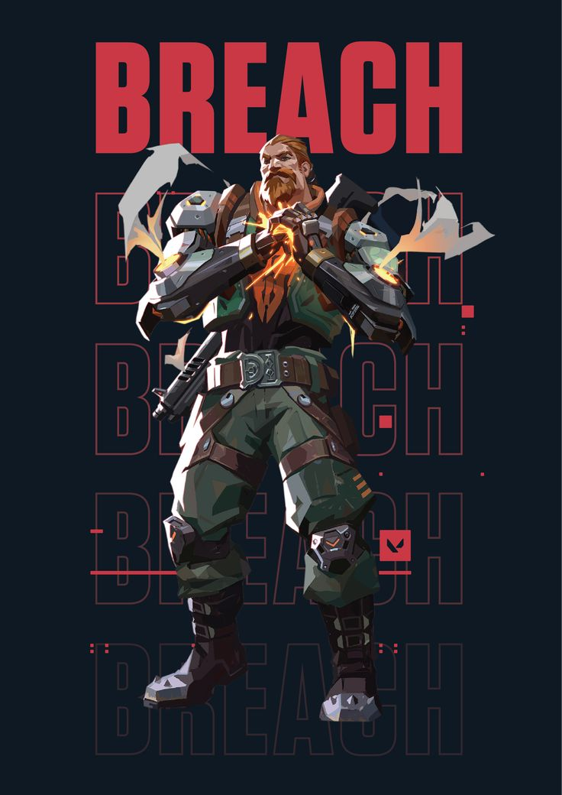
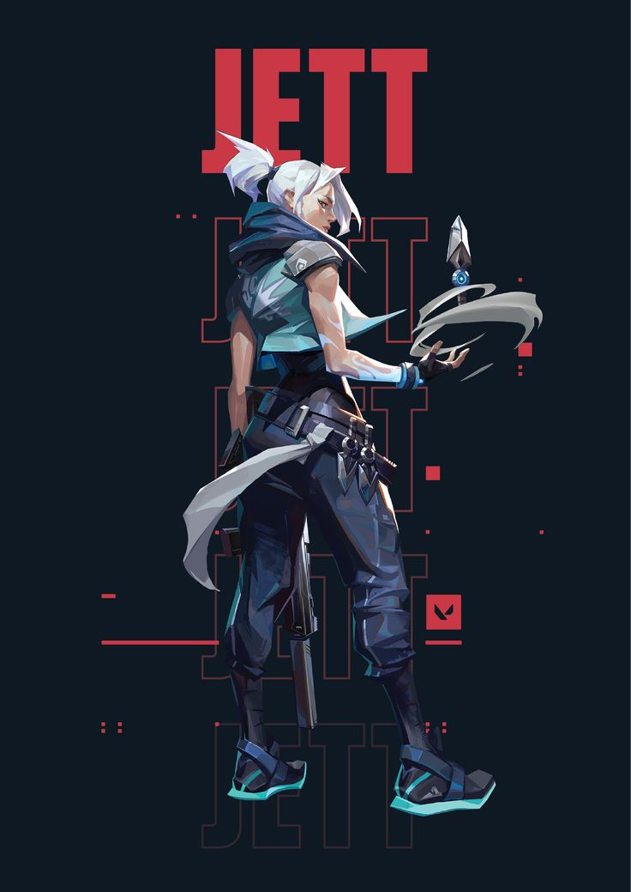
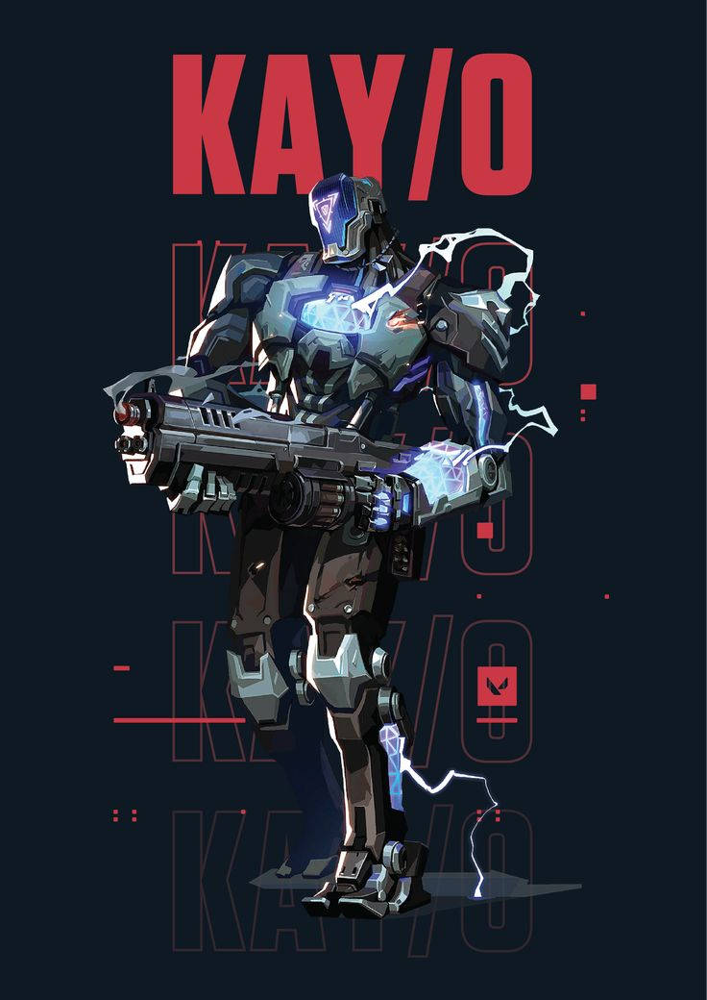
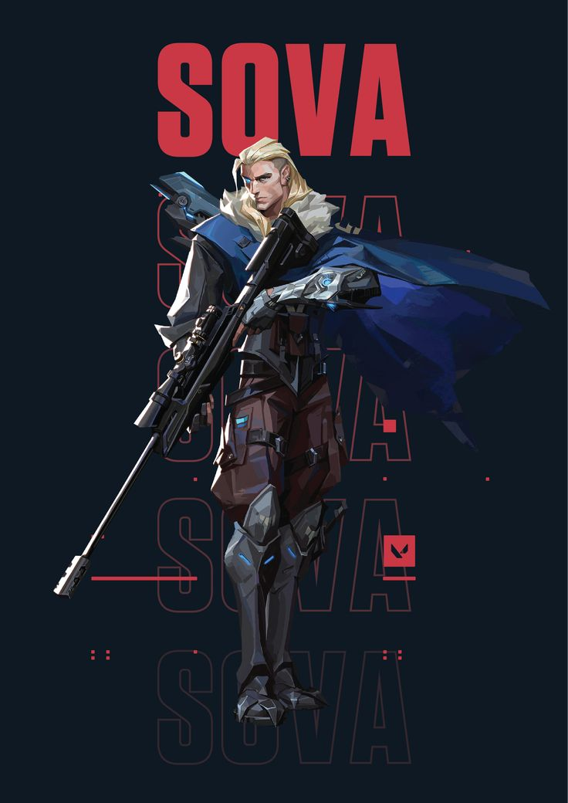
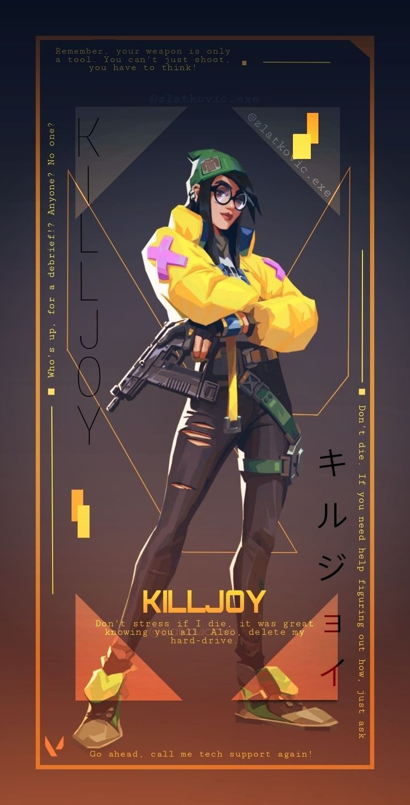

Raze berasal dari Brasil, dan kecintaannya pada teknik, teknologi, dan ledakan
membentuk perannya sebagai Duelist di Valorant Protocol.
Dia terlihat sebagai orang yang energik, berisik, dan suka bersenang-senang,
memberikan warna unik pada tim. Sifatnya yang suka bermain-main dan
tak kenal takut terlihat dalam kecintaannya pada kehancuran, di mana dia sering menggunakan kemampuan
peledaknya bukan hanya untuk bertarung, tetapi juga untuk bersenang-senang dan menciptakan kekacauan.

Breach
Breach adalah agen asal Swedia di Valorant yang menggunakan teknologi untuk menciptakan ledakan
dan menghancurkan pertahanan musuh. Dia bekerja dengan Valorant Protocol untuk melindungi dunia dari
ancaman berbahaya, dengan gaya bermain yang agresif dan fokus pada pengendalian area.
Brimstone
Brimstone adalah agen asal Amerika Serikat di Valorant dengan latar belakang militer sebagai komandan.
Sebagai pemimpin strategis, dia menggunakan teknologi canggih untuk mendukung tim,
seperti serangan udara dan kontrol area, menjadikannya efektif dalam memimpin serangan dan
mempertahankan posisi.

Jett
Jett adalah agen asal Korea Selatan di Valorant, dikenal dengan mobilitas tinggi dan kecepatan.
Sebelum bergabung dengan Valorant Protocol, dia menjadi buronan karena insiden terkait kekuatannya.
Sebagai Duelist, Jett menggunakan kemampuan angin untuk bergerak cepat dan menyerang musuh dengan lincah.

KAY/O
KAY/O adalah agen di Valorant yang berasal dari masa depan. Sebagai seorang Inisiator,
dia dirancang untuk memimpin dan menghancurkan kekuatan musuh.
KAY/O memiliki kemampuan untuk menetralkan dan menghambat kekuatan lawan,
serta memberikan dukungan strategis untuk timnya. Latarnya melibatkan perjuangan melawan
ncaman radiant yang membahayakan stabilitas dunia.

Sova
Sova adalah agen asal Rusia di Valorant, dengan latar belakang sebagai pemburu dan penyelidik.
Dia ahli dalam melacak musuh dan memberikan intelijen bagi timnya menggunakan panah khusus dan
teknologi canggih untuk mendukung strategi dan pengendalian area.

Killjoy
Killjoy adalah agen asal Jerman di Valorant yang merupakan seorang ahli teknologi dan ilmuwan.
Sebelum bergabung dengan Valorant Protocol, dia bekerja di bidang riset teknologi,
menciptakan berbagai gadget dan perangkat canggih.
Killjoy dikenal karena kemampuannya dalam mengendalikan area menggunakan perangkat yang dia rancang,
seperti perangkap dan turrets. Gaya bermainnya fokus pada pertahanan dan kontrol area,
membuatnya efektif dalam menjaga dan memantau wilayah yang strategis.